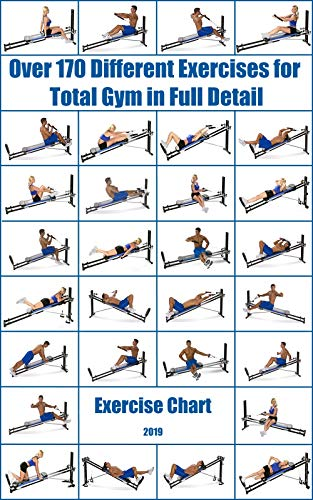

|  |
Q. As a beginner, how long should I do the workout for?=> Set a goal to continue with the workout programme for 3 months. Creating a long-term exercise routine is all about forming positive habits, which means giving your mind and body the time to adjust to doing something new. Each workout should take 45 minutes to 1 hour and you should always leave 48 hours between workouts to rest and recover properly. So a Monday-Wednesday-Friday routine works well for most people. Q. How much weight should I lift?=> As a beginner, the best thing you can do is start at the lower end of the weight spectrum and work your way up until you reach about 60/70% of your max limit (the most amount of weight you can lift for 1 repetition with good form ). That will give you a rough idea of what to start on and you can slowly increase the weight little by little every week. Q. What are reps and sets?=> A rep is how many times you repeat a specific exercise, whereas a set is how many rounds of reps you do. So if you lift 10 times on a bench press, that would be ‘one set of 10 reps’. If you took a short break and then did the same again, you’ll have completed ‘two sets of 10 reps’ Q. How many reps and sets, we should do?
|